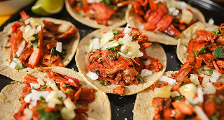

Pozole
 Del náhuatl pozolli, de tlapozonalli, que significa espumoso, es un caldo hecho a base de granos de maíz cacahuazintle, el cual tiene una cocción previo de dos horas, en ese proceso los granos de maíz pierden la cascara fibrosa que los cubre y cuando hierven se abren como flor, lo cual les da una apariencia de espuma. Se piensa que este platillo era consumido desde antes de la conquista, el emperador Moctezuma disfrutaba de este platillo, el cual era ofrendado al dios Xipe Tótec, señor de la fertilidad y la regeneración del maíz, y la guerra.
En recetas de cocina escritas por los frailes españoles luego de la conquista, se describe que era carne humana la que se cocían con el maíz pero existen otras versiones donde se dice que lo hervido con el pozole no era carne humana, sino xoloitzcuintle, una raza de perro domesticado y criado para consumo humano. Dependiendo del origen sigue siendo un platillo bastante representativo de la republica que se disfruta en días patrios, y aunque existen muchos tipos del mismo pozole, el favorito siempre ha sido el pozole rojo.
Del náhuatl pozolli, de tlapozonalli, que significa espumoso, es un caldo hecho a base de granos de maíz cacahuazintle, el cual tiene una cocción previo de dos horas, en ese proceso los granos de maíz pierden la cascara fibrosa que los cubre y cuando hierven se abren como flor, lo cual les da una apariencia de espuma. Se piensa que este platillo era consumido desde antes de la conquista, el emperador Moctezuma disfrutaba de este platillo, el cual era ofrendado al dios Xipe Tótec, señor de la fertilidad y la regeneración del maíz, y la guerra.
En recetas de cocina escritas por los frailes españoles luego de la conquista, se describe que era carne humana la que se cocían con el maíz pero existen otras versiones donde se dice que lo hervido con el pozole no era carne humana, sino xoloitzcuintle, una raza de perro domesticado y criado para consumo humano. Dependiendo del origen sigue siendo un platillo bastante representativo de la republica que se disfruta en días patrios, y aunque existen muchos tipos del mismo pozole, el favorito siempre ha sido el pozole rojo.
Mole
Antes se creía que Andrea de la Asunción en un convento de puebla fue el creador y originador del mole pero no es así, El verdadero origen del mole se da con las culturas prehispánicas donde los indígenas mezclaban varios chiles con semillas de calabaza, hierba santa y jitomate para crear una salsa a la que denominaban mulli, esta era acompañada normalmente con carne de guajolote aunque también se usaba la carne de pato o armadillo, era servido en ceremonias como ofrendas a los dioses. Con la llegada de los españoles a México durante la colonia nuevos productos se fueron uniendo a la receta de los moles como la pimienta negra, anís, y la canela, en caso de las carnes se integraronal pollo, res y puerco.
Chilaquiles
La palabra chilaquiles se dice que viene del náhuatl, “chilaquili” derivado de chili que significa chile y aquile equivalente a estar dentro de algo. Esto porque los chilaquiles son tortillas de maíz cortadas en triángulos, la mayoría de las veces son fritas y bañadas de salsa roja o verde un plato tradicional mexicano que se remonta a los primeros siglos de los aztecas. La palabra chilaquiles deriva de una palabra antigua en el idioma azteca náhuatl que significa «chilis y verdura.
conchinita pibil
La Cochinita Pibil dada sus orígenes a la época prehispánica donde se puede representar el nombre característico del Pib, el cual es un método de cocina que significa “Algo que debe ser enterrado” el cual se construía en el suelo como un pozo con lumbre y enterrarlo durante horas para tener una cocción lenta y homogénea.
Antes de la llegada de los españoles en la conquista los mayas disfrutaban el Pib en el Hanal Pixán el cual era el antecesor a los días de los muertos, esto dio origen al platillo tan reconocido que hoy conocemos como Cochinita pibil que se dio origen de la fusión de las culturas.
Tacos de Pastor

El origen de los tacos de pastor se puede explicar cómo la fusión de muchas culturas en un solo platillo, ya que debido no solamente al platillo en sí, sino también la forma en la cual se cocina repercute muchos factores, como el shawarma en su extraña forma de cocinar que fue traída desde el medio oriente hasta México en la época prehispánica, así como el cerdo que fue traído de Europa, y con un toque de nuestra cultura como es la condimentación de la carne que se da con las mezcla de chiles y especias como en la mayoría de platillos Mexicanos.